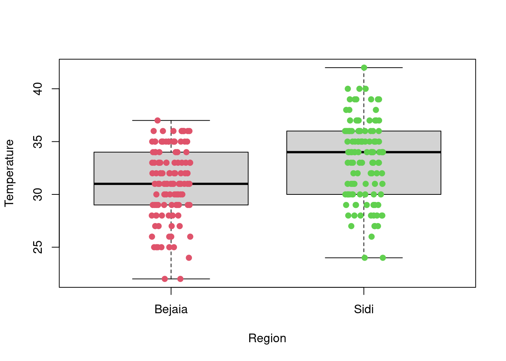
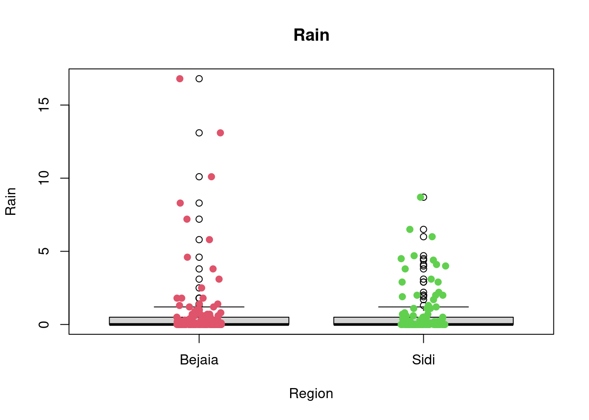
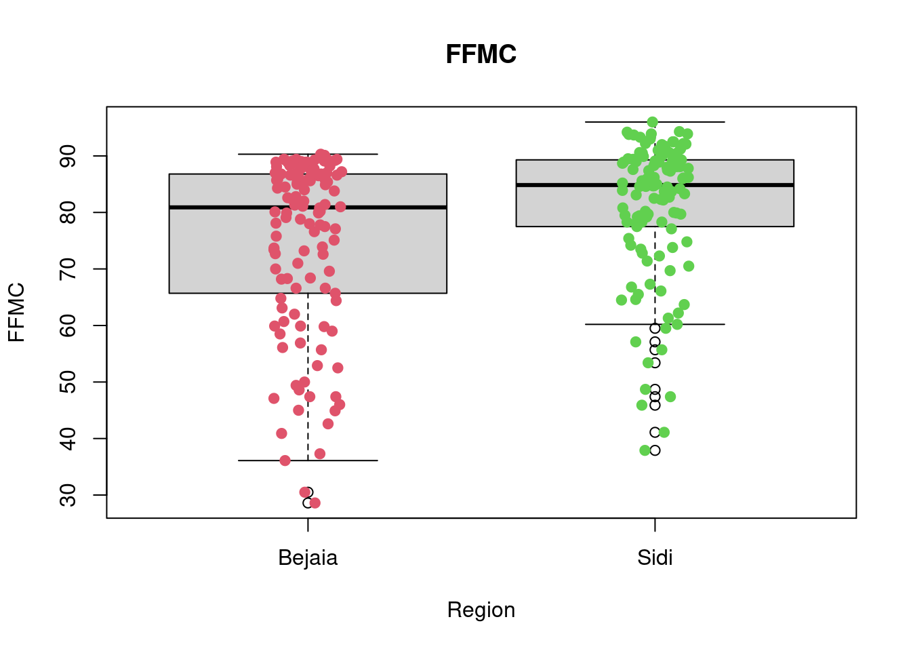
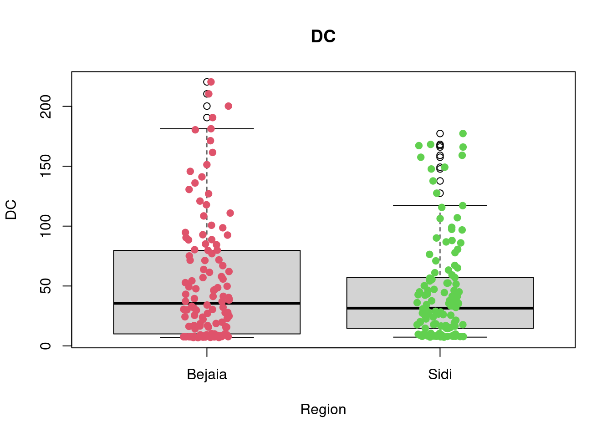
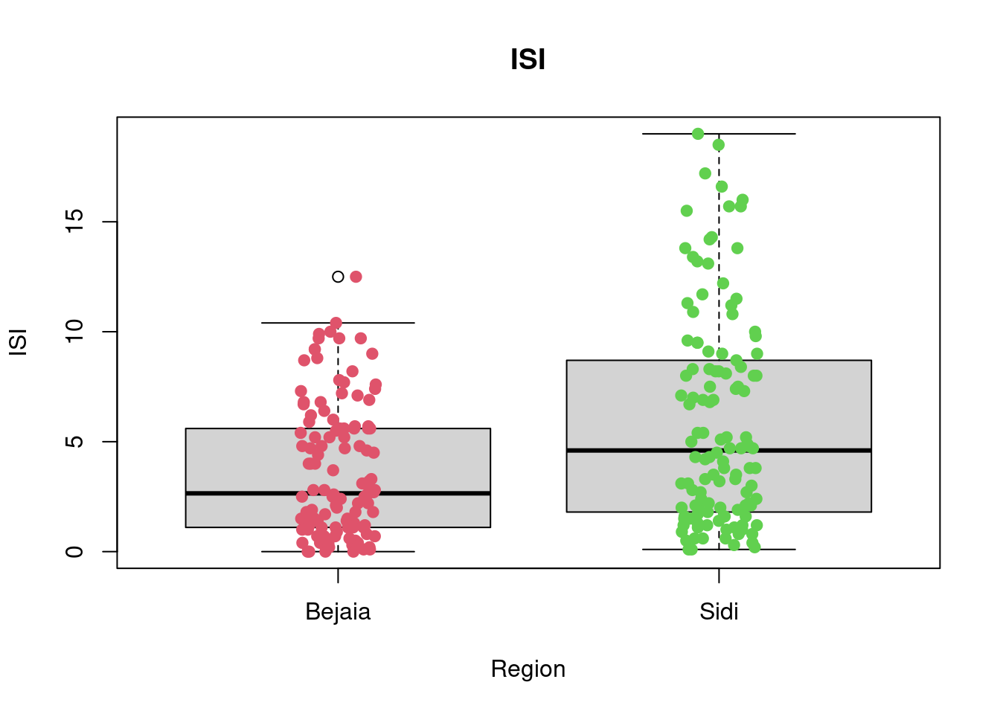
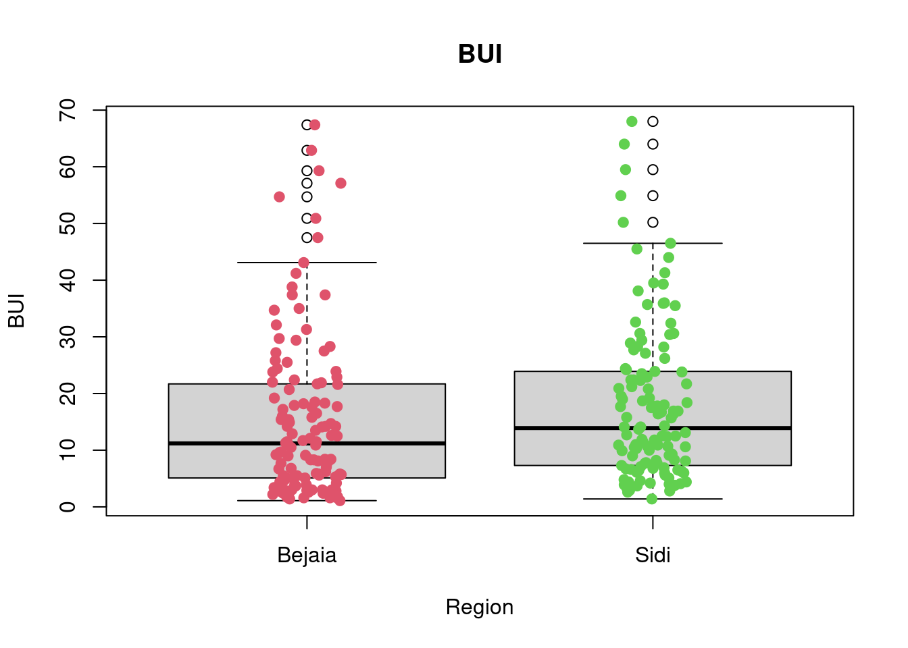
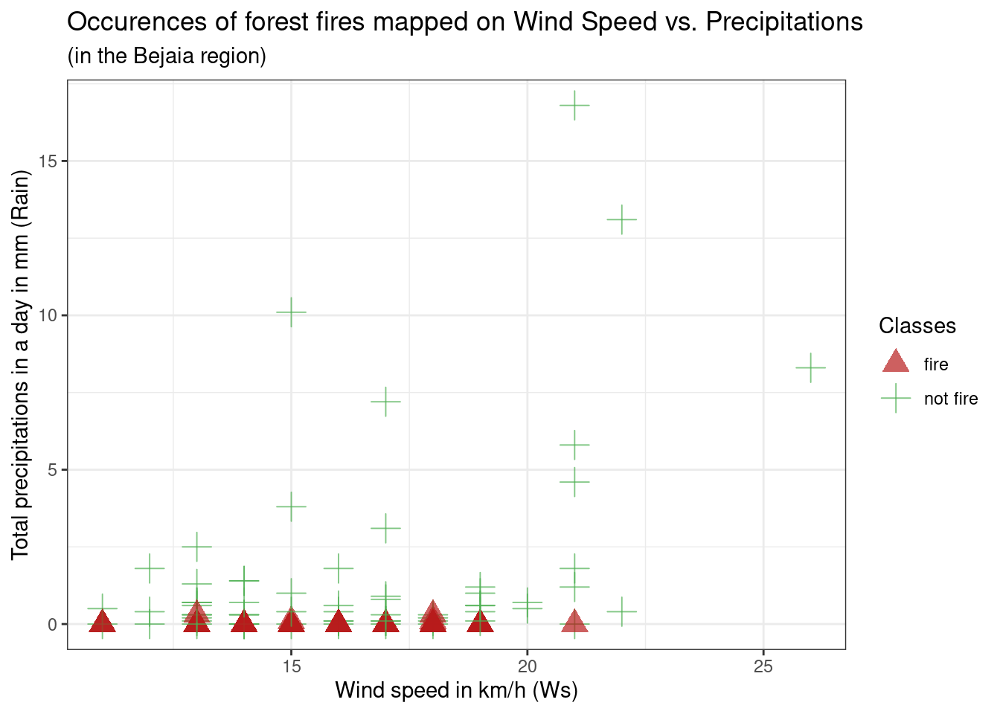

library(tidyverse)
library(tidymodels)
# If you use other packages, add them here
library(psych)
library(mosaic)
library(ggcorrplot)
library(cvms)
library(car)
library(rpart)
library(rpart.plot)✔️ Summative Problem Set 01 | Solutions
DS202 - Data Science for Social Scientists
Here you will find model solutions to the first Summative Problem Set of DS202 (2022/23).
🥇 These solutions were submitted by a student who scored 100/100 marks and shared here with permission.
⚙️ Setup
The Data: Algerian forest fires
🯠Questions - Part I
Q1. Fire days
Using R, count the number of fire days observed in the two regions. (2 points)
- Bejaia region
count1 <- df_forest_fires_bejaia %>% count(Classes)
count1[1,]# A tibble: 1 × 2
Classes n
<chr> <int>
1 fire 59- Sidi Bel-abbes region
count2 <- df_forest_fires_sidi %>% count(Classes)
count2[1,]# A tibble: 1 × 2
Classes n
<chr> <int>
1 fire 79Q2. Fire days in common
Using R, calculate how many days of fire the two regions had in common, and explain how you calculated it. (3 points)
df_forest_fires <- bind_rows(df_forest_fires_bejaia, df_forest_fires_sidi, .id = "Region")
count3 <-
df_forest_fires %>%
count(Classes, day, month) %>%
filter(Classes == 'fire' & n==2) %>%
count()
count3# A tibble: 1 × 1
n
<int>
1 47Explain what you did in the code above:
First, I created a new data frame called df_forest_fires with the bind_rows function from dplyr combining the data points from both regions and creating a dummy variable “Region†coding 1 for Bejaia and 2 for Sidi Bel-abbes. I decided to do this independently of my
countpipe below so this dataset could be used for further analysis.Then, using the tidyverse and the count function from
dplyr, I first count the number n of independent occurences of Classes, day and month. Then I filter those occurences using the dplyrfilterfunction to only show me the ones including ‘fire’ AND two occurences n. Then == 2occurences signifies that on that day, there was a fire in both regions. Lastly, I count the overall number of occurences left and I get 47. The two regions had 47 days of fire in common.
Q3. Exploratory Data Analysis - Part I
Run the code below to look at the plot it produces. In your own words, explain what you see: what dataset was used in the plot, what are the variables in the X and Y axis and what do the colours mean? (2 points)
g <-
(ggplot(df_forest_fires_bejaia,
aes(x = Temperature, y = RH, colour = Classes)) +
geom_point(aes(shape=Classes), alpha = 0.7, size = 4.5) +
scale_shape_manual(values=c(17, 3)) +
scale_colour_manual(values=c('#B71C1C', '#4CAF50')) +
labs(
title = "Occurences of forest fires mapped on Temperature vs Relative Humidity",
subtitle = "(in the Bejaia region)",
x = "Maximum temperature at noon in Celsius degrees (Temperature)",
y = "Relative Humidity in % (RH)"
) +
theme_bw()
)
g
This is a scatterplot created using the
df_forest_fires_bejaiadataset, meaning the forest fire dataset for the Bejaia region. The variable used on the x-axis isTemperature(temperature at noon (max temperature) in Celsius degrees), and on the y-axis isRH(Relative Humidity in %). Additionally, the colour and shape argument usesClasses(the occurence of a forest fire that day). Thus on the graph, red triangle data points represent days that have had a forest fire, and green crosses data points days where there was no forest fire. The colour and shape of these data points are respectively determined byscale_colour_manualandscale_shape_manualarguments.Initially we can see
RHandTemperatureseem to be negatively correlated, meaning data points on higher humidity days also have lower temperature, and vice-versa, on high temperature days, humidity % seems to be lower. Additionally, fire occurences seem to be concentrated on this latter type of day: low humidity percentage and high temperature, however, this relationship doesn’t seem very strong as there are still many non-fire occurences on those days.
Q4. Exploratory Data Analysis - Part II
Now, create a scatterplot using any two predictors from the Sidi Bel-abbes region data. Colour the dots according to their Classes (3 points)
You can use either base R or ggplot. 1
g2 <-
(ggplot(df_forest_fires_sidi,
aes(x = Ws, y = Rain, colour = Classes)) +
geom_point(aes(shape=Classes), alpha = 0.7, size = 4.5) +
scale_shape_manual(values=c(17, 3)) +
scale_colour_manual(values=c('#B71C1C', '#4CAF50')) +
labs(
title = "Occurences of forest fires mapped on Wind Speed vs. Precipitations",
subtitle = "(in the Sidi Bel-abbes region)",
x = "Wind speed in km/h (Ws)",
y = "Total precipitations in a day in mm (Rain)"
) +
theme_bw()
)
g2Q5. Exploratory Data Analysis - Part III
Can you spot differences in the distributions of predictors between the two regions (Sidi Bel-abbes vs Bejaia)? Describe the differences for at least one variable. Write your response and provide evidence using R code. You could use, for example, cross-tabulation, descriptive statistics or visualisations to support your point. (8 points)
Here, the learner used several functions from the mosaic package. Learn more about this package here.
We also see lots of different comparisons, which is great! If you used only one single variable for comparison, your solution will still be valid, don’t worry.
For every predictor, I created a boxplot visualising the potential differences in the distribution of a predictor between the two regions. The boxplots are overlayed with the data points. Lastly, I also requested a
favstatstable for each predictor that outputs the minimum, Q1, median, Q3, maximum, mean, standard deviation, sample sizes, and cases of missing data for each predictor in each Region.I used the dataset combining both regions created in Q3 and then used my dummy variable region as an argument to separate the data points. I renamed the 1, 0 dummy values with their string character equivalent to make visualisation easier to interpret.
A first look at all plots and tables shows some predictors seem to have distributional differences while others are fairly similar across regions. For example, there are noticeable differences between regions in RH, FFMC, DC, ISI and FWI; whereas the distribution of data points remains fairly similar across regions for Temperature, Rain, Ws, DMC, and BUI. For example, in the RH boxplot we can see that the median in the Bejaia region seems to be above Q3 for the Sidi region. What’s more the range of values in the Sidi region seems much greater than for the Bejaia region, as the data points are more dispersed.
The
favstatstable allows us to quantify these differences. Indeed, while the maximum is similar for both regions (89% humidity in Bejaia and 90% in Sidi), the minimum value as well as Q1, the median, the mean, Q3 and the standard deviation differ greatly. For example, the minimum observed relative humidity in Bejaia is 45% opposed to 21% in Sidi. This greater range of data points in the Sidi region is what drives the differences in all these statistics: the mean in Bejaia is 68% relative humidity compared to 56% in Sidi, following the same logic, standard deviations from the mean are much smaller in Bejaia with sd = 11.2 compared to sd = 15.7 in Sidi.
df_forest_fires <- transform(df_forest_fires, Classes = as.factor(Classes))
df_forest_fires$Region <- ifelse(df_forest_fires$Region == 1L, 'Bejaia', 'Sidi')
df_forest_fires <- transform(df_forest_fires, Region = as.factor(Region))
boxplot(Temperature~Region,data=df_forest_fires,
xlab="Region", ylab="Temperature")
stripchart(Temperature~Region,
data = df_forest_fires,
method = "jitter",
pch = 19,
col = 2:4,
vertical = TRUE,
add = TRUE)
favstats(Temperature~Region, data = df_forest_fires) Region min Q1 median Q3 max mean sd n missing
1 Bejaia 22 29 31 34 37 31.18033 3.320401 122 0
2 Sidi 24 30 34 36 42 33.16393 3.675608 122 0boxplot(RH~Region,data=df_forest_fires, main="RH", xlab="Region", ylab="RH")
stripchart(RH~Region,
data = df_forest_fires,
method = "jitter",
pch = 19,
col = 2:4,
vertical = TRUE,
add = TRUE)favstats(RH~Region, data = df_forest_fires) Region min Q1 median Q3 max mean sd n missing
1 Bejaia 45 60.00 68 77.75 89 67.97541 11.15441 122 0
2 Sidi 21 43.25 56 66.75 90 55.90164 15.71619 122 0boxplot(Ws~Region,data=df_forest_fires, main="Ws", xlab="Region", ylab="Ws")
stripchart(Ws~Region,
data = df_forest_fires,
method = "jitter",
pch = 19,
col = 2:4,
vertical = TRUE,
add = TRUE)favstats(Ws~Region, data = df_forest_fires) Region min Q1 median Q3 max mean sd n missing
1 Bejaia 11 14 16 18.00 26 16.0000 2.848807 122 0
2 Sidi 6 14 15 16.75 29 15.0082 2.692186 122 0boxplot(Rain~Region,data=df_forest_fires, main="Rain", xlab="Region", ylab="Rain")
stripchart(Rain~Region,
data = df_forest_fires,
method = "jitter",
pch = 19,
col = 2:4,
vertical = TRUE,
add = TRUE)
favstats(Rain~Region, data = df_forest_fires) Region min Q1 median Q3 max mean sd n missing
1 Bejaia 0 0 0 0.500 16.8 0.8426230 2.409208 122 0
2 Sidi 0 0 0 0.475 8.7 0.6786885 1.486759 122 0boxplot(FFMC~Region,data=df_forest_fires, main="FFMC", xlab="Region", ylab="FFMC")
stripchart(FFMC~Region,
data = df_forest_fires,
method = "jitter",
pch = 19,
col = 2:4,
vertical = TRUE,
add = TRUE)
favstats(FFMC~Region, data = df_forest_fires) Region min Q1 median Q3 max mean sd n missing
1 Bejaia 28.6 65.925 80.90 86.775 90.3 74.67295 15.55871 122 0
2 Sidi 37.9 77.650 84.85 89.275 96.0 81.10246 12.24406 122 0boxplot(DMC~Region,data=df_forest_fires, main="DMC", xlab="Region", ylab="DMC")
stripchart(DMC~Region,
data = df_forest_fires,
method = "jitter",
pch = 19,
col = 2:4,
vertical = TRUE,
add = TRUE)favstats(DMC~Region, data = df_forest_fires) Region min Q1 median Q3 max mean sd n missing
1 Bejaia 0.7 3.725 9.45 16.3 54.2 12.31475 11.27436 122 0
2 Sidi 0.9 7.325 13.15 22.9 65.9 17.03197 12.99507 122 0boxplot(DC~Region,data=df_forest_fires, main="DC",
xlab="Region", ylab="DC")
stripchart(DC~Region,
data = df_forest_fires,
method = "jitter",
pch = 19,
col = 2:4,
vertical = TRUE,
add = TRUE)
favstats(DC~Region, data = df_forest_fires) Region min Q1 median Q3 max mean sd n missing
1 Bejaia 6.9 10.05 35.55 79.025 220.4 53.16066 51.77826 122 0
2 Sidi 7.3 14.70 31.50 56.975 177.3 45.41557 42.92756 122 0boxplot(ISI~Region,data=df_forest_fires, main="ISI",
xlab="Region", ylab="ISI")
stripchart(ISI~Region,
data = df_forest_fires,
method = "jitter",
pch = 19,
col = 2:4,
vertical = TRUE,
add = TRUE)
favstats(ISI~Region, data = df_forest_fires) Region min Q1 median Q3 max mean sd n missing
1 Bejaia 0.0 1.125 2.65 5.600 12.5 3.655738 3.021768 122 0
2 Sidi 0.1 1.825 4.60 8.625 19.0 5.863934 4.803667 122 0boxplot(BUI~Region,data=df_forest_fires, main="BUI",
xlab="Region", ylab="BUI")
stripchart(BUI~Region,
data = df_forest_fires,
method = "jitter",
pch = 19,
col = 2:4,
vertical = TRUE,
add = TRUE)
favstats(BUI~Region, data = df_forest_fires) Region min Q1 median Q3 max mean sd n missing
1 Bejaia 1.1 5.1 11.2 21.675 67.4 15.42623 14.47430 122 0
2 Sidi 1.4 7.4 13.9 23.875 68.0 17.92049 13.87078 122 0boxplot(FWI~Region,data=df_forest_fires, main="FWI",
xlab="Region", ylab="FWI")
stripchart(FWI~Region,
data = df_forest_fires,
method = "jitter",
pch = 19,
col = 2:4,
vertical = TRUE,
add = TRUE)favstats(FWI~Region, data = df_forest_fires) Region min Q1 median Q3 max mean sd n missing
1 Bejaia 0 0.500 3.00 8.70 30.2 5.577869 6.343051 122 0
2 Sidi 0 0.925 6.05 13.65 31.1 8.520492 8.137424 122 0🯠Questions - Part II
Q6. Logistic Regression Model
Build a logistic regression model for the Bejaia dataset using THREE predictors to predict the ocurrence of fire (the Classes variable). You can also add interaction effects amongst these three predictors if you wish. Save it as a variable named model and use R to print its summary. (7 points)
You can choose to print the summary using base R or any of the functions from the broom package (part of tidymodels).
df_forest_fires_bejaia$Classes_d <- ifelse(df_forest_fires_bejaia$Classes == 'fire', 1, 0)
model <- glm(Classes_d ~ Temperature + Rain + FFMC ,
data = df_forest_fires_bejaia, family = 'binomial')Warning: glm.fit: fitted probabilities numerically 0 or 1 occurredsummary(model)
Call:
glm(formula = Classes_d ~ Temperature + Rain + FFMC, family = "binomial",
data = df_forest_fires_bejaia)
Deviance Residuals:
Min 1Q Median 3Q Max
-1.81664 -0.00014 0.00000 0.02022 2.06273
Coefficients:
Estimate Std. Error z value Pr(>|z|)
(Intercept) -113.7918 45.9466 -2.477 0.01326 *
Temperature -0.2774 0.2853 -0.973 0.33078
Rain 2.2264 1.2165 1.830 0.06722 .
FFMC 1.5101 0.5818 2.596 0.00944 **
---
Signif. codes: 0 '***' 0.001 '**' 0.01 '*' 0.05 '.' 0.1 ' ' 1
(Dispersion parameter for binomial family taken to be 1)
Null deviance: 168.997 on 121 degrees of freedom
Residual deviance: 18.588 on 118 degrees of freedom
AIC: 26.588
Number of Fisher Scoring iterations: 11Q7. Logistic Regression Model - Justification
Provide a reasonable explanation for your choice of the three predictors in Q6. Why did you chose those variables? (10 points)
(Optional: add additional R code/visualisations that you feel might help support your answer)
g <-
(ggplot(df_forest_fires_bejaia,
aes(x = Temperature, y = RH, colour = Classes)) +
geom_point(aes(shape=Classes), alpha = 0.7, size = 4.5) +
scale_shape_manual(values=c(17, 3)) +
scale_colour_manual(values=c('#B71C1C', '#4CAF50')) +
labs(
title = "Occurences of forest fires mapped on Temperature vs Relative Humidity",
subtitle = "(in the Bejaia region)",
x = "Maximum temperature at noon in Celsius degrees (Temperature)",
y = "Relative Humidity in % (RH)") +
theme_bw()
)
gg2 <-
(ggplot(df_forest_fires_bejaia,
aes(x = Ws, y = Rain, colour = Classes)) +
geom_point(aes(shape=Classes), alpha = 0.7, size = 4.5) +
scale_shape_manual(values=c(17, 3)) +
scale_colour_manual(values=c('#B71C1C', '#4CAF50')) +
labs(
title = "Occurences of forest fires mapped on Wind Speed vs. Precipitations",
subtitle = "(in the Bejaia region)",
x = "Wind speed in km/h (Ws)",
y = "Total precipitations in a day in mm (Rain)") +
theme_bw()
)
g2
g3 <-
(ggplot(df_forest_fires_bejaia,
aes(x = FWI, y = BUI, colour = Classes)) +
geom_point(aes(shape=Classes), alpha = 0.7, size = 4.5) +
scale_shape_manual(values=c(17, 3)) +
scale_colour_manual(values=c('#B71C1C', '#4CAF50')) +
labs(
title = "Occurences of forest fires mapped on FWI vs. BUI",
subtitle = "(in the Bejaia region)",
x = "Fire Weather Index Index (FWI)",
y = "Buildup Index index from the FWI system (BUI)") +
theme_bw()
)
g3g4 <-
(ggplot(df_forest_fires_bejaia,
aes(x = FFMC, y = DC, colour = Classes)) +
geom_point(aes(shape=Classes), alpha = 0.7, size = 4.5) +
scale_shape_manual(values=c(17, 3)) +
scale_colour_manual(values=c('#B71C1C', '#4CAF50')) +
labs(
title = "Occurences of forest fires mapped on FFMC vs. DC",
subtitle = "(in the Bejaia region)",
x = "Fine Fuel Moisture Code index from the FWI system (FFMC)",
y = "Drought Code index from the FWI system (DC)") +
theme_bw()
)
g4g5 <-
(ggplot(df_forest_fires_bejaia,
aes(x = ISI, y = DMC, colour = Classes)) +
geom_point(aes(shape=Classes), alpha = 0.7, size = 4.5) +
scale_shape_manual(values=c(17, 3)) +
scale_colour_manual(values=c('#B71C1C', '#4CAF50')) +
labs(
title = "Occurences of forest fires mapped on ISI vs. DMC",
subtitle = "(in the Bejaia region)",
x = "Initial Spread Index index from the FWI system (ISI)",
y = "Duff Moisture Code index from the FWI system (DMC)") +
theme_bw()
)
g5
Based on exploratory analysis of the variables, as done in the plots of Q3 and Q4 (above), we want to get an idea of the effect of predictors on the occurence of forest fires. The scatterplots allow us to rapidly see the effects of 2 variables at one time while also getting an idea of how those two variables are correlated with another.
From g1: Initially we can see RH and Temperature seem to be negatively correlated, meaning data points on higher humidity days also have lower temperature, and vice-versa, on high temperature days, humidity percentage seems to be lower. Additionally, fire occurences seem to be concentrated on this latter type of day: low humidity percentage and high temperature, however, this relationship doesn’t seem very strong as there are still many non-fire occurences on those days. We can keep Temperature and RH in mind as potential predictors, but especially RH shouldn’t be our priority (as it doesn’t separate non-fire vs fire occurences well).
From g2: Ws and Rain do not seem like they have a strong relationship. Besides, fire occurences are concentrated on days where there are no precipitation but across all levels of wind speed. However, there are still many non-fire occurences on days with no precipitations, which implies the predictor isn’t as strong as it could be. We can exclude Ws as a potential predictor but keep Rain in mind as potential predictors.
From g3: We can see FWI and BUI seem to be positively correlated, meaning data points that are higher on FWI are higher on BUI, which is to be expected as FWI is calculated based on ISI and BUI. Additionally, fire occurences seem to be spread across BUI and FWI values above 8 and 2 respectively. However, while this seems to have little predictive power at first sight, we can see that the non-fire occurences are clearly separated from the fire occurences. We can keep FWI and BUI in mind as good potential predictors, however, they can’t be used together as it is likely they are highly auto-correlated because of the way FWI is built.
From g4: We can see FFMC and DC seem to be have a positive almost quadratic relationship, which is to be expected as they are both built using the same weather components, Temperature and Rain, with FFMC using Ws and RH as well. Additionally, fire occurences seem to be spread across DC values above 25 and FFMC values above 80. While FFMC seems like a great predictor, DC seems to have little predictive power at first sight. But we can see that the non-fire occurences are clearly separated from the fire occurences, which makes DC a potentially good predictors. We can keep FFMC and DC in mind as good potential predictors, but we’ll need to check their autocorrelation first to see if we can use them together.
From g5: We can see ISI and DMC seem to be positively correlated, meaning data points that are higher on ISI are higher on DMC, which could be expected as ISI and DMC are based on common variables such as Rain, Rh and Temperature. Additionally, fire occurences seem to be spread across ISI and DMC values above 3 and 5 respectively. However, while this seems to have little predictive power at first sight, we can see that the non-fire occurences are clearly separated from the fire occurences, separation which is much clearer for ISI than for DMC. We can keep FFMC and DC in mind as good potential predictors, but we’ll need to check their autocorrelation first to see if we can use them together.
df_forest_fires_bejaia_quant <- df_forest_fires_bejaia %>% select(-c(day, month, year, Classes))
corr_df_forest_fires_bejaia_quant <- cor(df_forest_fires_bejaia_quant)
ggcorrplot(corr_df_forest_fires_bejaia_quant, lab=TRUE, digits=2, lab_size=3)This plot confirms our concern about auto-correlation. It was to be expected as FWI is a product of ISI and BUI. ISI is a porduct of FFMC and Wind measures. And BUI is a product of DMC and DC. Lastly, FFMC, DC and DMC are built out of at least temperature and Rain, with some using RH and Ws as well. For our choice of predictors, we want 3 good predictors that have the least autocorrelation possible. A model with high auto-correlation would perform well on training data but is likely to severely underperform on test data.
model2 <- glm(Classes_d ~ Rain + Temperature + Ws + RH +FFMC + DC + DMC + BUI + ISI + FWI,
data = df_forest_fires_bejaia, family = 'binomial')Warning: glm.fit: algorithm did not convergeWarning: glm.fit: fitted probabilities numerically 0 or 1 occurredvif(model2) Rain Temperature Ws RH FFMC DC
17.664741 11.988734 6.210314 5.347892 40.005401 815.709269
DMC BUI ISI FWI
1556.550307 6483.331662 237.969435 308.357741 If we calculate the Variance Inflation Factor (VIF) of each variable to measure collinearity, on a model using all of them, we can see all of our predictors are problematic with a conservative cut-off of 5. This is a very peculiar dataset, so I think the best solution is to stick to the original variables which all others are made-off, Temperature, Ws, RH and Rain, and choose 2 which seem to have the most predictive power based on the graphs: Temperature and Rain. From there on, we can look whether one of the composite scores, has a low-enough amount of collinearity to be chosen without compromising the model.
The correlation plot and the VIF test show FFMC has the lowest amount of collinearity with all of the other composite scores. This is very sensible when we know how FFMC is built: it uses the most variables out of all predictors: in addition to Temperature and Rain, it also uses Ws and RH, AND yesterday’s FFMC, integrating an intra-day component. Thus using FFMC in our model enables us to capture many variables. This is how my final predictors were: Temperature, Rain and FFMC.
I chose not to use any interactions, as the variables already interact in FFMC. My answer would be very different if we were to choose 2 predictors or 1, because the inital weather predictors are clearly not the most predictive ones, but I think it is better than compromising the whole model with a high degree of auto-collinearity.
Q8. Logistic Regression Model - Diagnostics
Run the code below to look at the plot it produces. In your own words, explain what you see and what this plot tells you about your model. (8 points)
âš ï¸ If you didn’t build a model in Q6, erase or comment out the block of code below. Otherwise, you will get an error when knitting this notebook.
train_classes <- df_forest_fires_bejaia$Classes
train_predictions <- predict(model, df_forest_fires_bejaia, type = "response")
plot_df <- data.frame(train_classes = train_classes,
train_predictions = train_predictions)
g <-
(ggplot(plot_df, aes(x = train_predictions, fill = train_classes))
+ geom_histogram(alpha = 0.8, binwidth = 0.05, position = "stack")
+ theme_bw()
+ labs(x = "Predictions on the training set",
y = "Count")
+ scale_fill_brewer(name = "Target", type = "qual", palette = 2)
+ scale_x_continuous(labels = scales::percent, breaks = seq(0, 1, 0.1))
+ ggtitle("Histogram of probability distributions fitted to the data")
)
gThe code builds a histogram of the prediction response of the dataset. The option type=‘response’ outputs probabilities of the form P(Y = 1|X). This means the probability output is the probability of a fire occuring that day based on the predictor variables.
The value on the x-axis are these probabilities, 100% means there is a very high chance that there will be a fire that day, and 0% means there is a very low chance a fire will be occuring that day. Values such as 50% represent an average chance a fire will be occuring that day.
The count on the y-axis represents the count of the number of predictions of a certain value (percentage) on the x-axis. For example, there are approximately 54 predictions of 0% chances of a fire occuring, 1 prediction of 50% chance and 52 predictions of 100% chance (according to our model, out of a sample size of 122).
What’s more the colour fill we can see corresponds to the real
Classescorresponding to our predictions, for example a prediction that is orange, whether it scores 20% or 100%, in real life, was a"not fire"occurence, whereas a green prediction was an occurence of"fire". Thus, if our model is correct, we expect"not fire"occurences (orange) to gather on the left hand side of the graph, and"fire"occurences (green) to gather on the right-hand side of the graph.For now we can’t make any definite judgements on accuracy of our model as we haven’t chosen a decision threshold yet, a default could be 50% but this can be adjusted after various model diagnostics and taking into account real life objectives.
What we can see here is that our model tends to predict extreme values such as 0% or 100% and very little in between, this makes judging the model fit easy at this point because we are unlikely to choose a threshold outside of 0.10 and 0.90. In that case, it seems our model fits the training data pretty well. Some predictions such as the 10% green prediction are likely to be identified as a training error (provided or treshold is not outside of 0.10 and 0.90), as it predicts with 10% probability that there will be a fire on a day where there was actually a fire. Overall, it seems our model fits the training data pretty well.
🯠Questions - Part III
Here we will ask you to reflect on the threshold of your classification model.
First, take a look at the function below that will help you select a good threshold for your model.
The function apply_threshold receives three arguments (model, df & threshold) and returns a vector of predicted classes with the same length as there are observations in the dataframe df.
apply_threshold <- function(model, df, threshold) {
pred_probs <- predict(model, df, type = "response")
pred_classes <- factor(ifelse(pred_probs < threshold, "not fire", "fire"),
levels = c("not fire", "fire"),
ordered = TRUE)
return(pred_classes)
}Q9. Logistic Regression Model - Confusion Matrix
Run the code below to look at the table it produces. What does this table show and what does it tell you about your model? (3 points)
train_classes <- df_forest_fires_bejaia$Classes
train_class_predictions <- apply_threshold(model, df_forest_fires_bejaia, threshold=0.50)
confusion_matrix <- table(train_classes, train_class_predictions)
print(confusion_matrix) train_class_predictions
train_classes not fire fire
fire 1 58
not fire 61 2plot_confusion_matrix(as_tibble(confusion_matrix),
target_col = "train_classes",
prediction_col = "train_class_predictions",
add_normalized = TRUE,
add_col_percentages = FALSE,
add_row_percentages = FALSE,
counts_col = "n",
)Warning in plot_confusion_matrix(as_tibble(confusion_matrix), target_col =
"train_classes", : 'ggimage' is missing. Will not plot arrows and zero-shading.This table shows the confusion matrix of predictions made from our model about fire occurences on the training dataset versus actual fire occurences on the same day on the training dataset. These predictions are set on a threshold of 0.50, this means any prediction of a probability above or equal to 50% of a “fire†occuring that day gets classified as a fire occurence, and any prediction of a fire occuring that day strictly below 50% get classified as “not fire†occuring that day.
This table was converted into a visual confusion matrix plot, facilitating interpretation. It says about our model that with a treshold of 0.50, our model correctly predicts the dark blue occurences so 61 + 58 data points, in all 97.5% of our test data (50 + 47.5). This is called model accuracy. Our model incorrectly predicts the light blue occurences, 3 occurences eg. approximately 2.4% of our training data. For further specifications about model fit, the below calculations based on the above confusion matrix enable us to see details. These are relevant, as different real life scenario call for a focusing on optimizing certain prediction such as for example true positives above another (eg. false negatives).
First, the exact accuracy as manually calculated above is calculated (97.54%). Then we calculate the specificity, also called the True Negative Rate which is 96.83 %. Then we calculate the true positive rate, called sensitivity or recall: 98.31 %. Lastly, we calculate the precision, the rate of true positives that predicted our alternate variable “fire”, here 96.67 %.
train_class_predictions_v <- as.factor(as.vector(train_class_predictions))
# Accuracy
accuracy_test <- sum(train_class_predictions_v == train_classes)/nrow(df_forest_fires_bejaia)
cat(sprintf("%.2f %%", accuracy_test*100))97.54 %# Specificity: True Negative Rate
total_real_no <- sum(train_classes == "not fire")
total_correct_no <- sum(train_class_predictions_v == "not fire" & train_classes == "not fire")
TNR_test <- total_correct_no/total_real_no
cat(sprintf("%.2f %%", TNR_test*100))96.83 %# Sensitivity or Recall: True Positive Rate
total_real_yes <- sum(train_classes == "fire")
total_correct_yes <- sum(train_class_predictions_v == "fire" & train_classes == "fire")
TPR_test <- total_correct_yes/total_real_yes
cat(sprintf("%.2f %%", TPR_test*100)) 98.31 %## Precision: How many True Positives over all predicted="fire"?
total_predicted_yes <- sum(train_class_predictions_v == "fire")
precision_test <- total_correct_yes/total_predicted_yes
cat(sprintf("%.2f %%", precision_test*100)) 96.67 %Q10. Logistic Regression Model - Classification metrics
Now, consider three other options of threshold: \(t \in \{0.20, 0.40, 0.60\}\). Which of these three options lead to the best f1-score for your model? Write the R code for this and justify your answer. (7 points)
treshold <- c(0.20, 0.40, 0.60)
for (i in treshold) {
train_classes <- df_forest_fires_bejaia$Classes
train_class_predictions <- apply_threshold(model, df_forest_fires_bejaia, threshold=i)
train_class_predictions_v <- as.factor(as.vector(train_class_predictions))
total_real_yes <- sum(train_classes == "fire")
total_correct_yes <- sum(train_class_predictions_v == "fire" & train_classes == "fire")
TPR_test <- total_correct_yes/total_real_yes
total_predicted_yes <- sum(train_class_predictions_v == "fire")
precision_test <- total_correct_yes/total_predicted_yes
f1_test <- (2*precision_test*TPR_test)/(precision_test + TPR_test)
cat("The f1-score for our model with a threshold of", i, "is", f1_test, ".", fill = TRUE)
}The f1-score for our model with a threshold of 0.2 is 0.9508197 .
The f1-score for our model with a threshold of 0.4 is 0.9666667 .
The f1-score for our model with a threshold of 0.6 is 0.9565217 .Out of the three options given for tresholds (0.2; 0.4; 0.6), 0.4 gives the best f1 score (as the best f1 score is the closest to 1 possible) of approximately 0.97. As can be seen from the 3 outputs, the f1 score doesn’t vary greatly for each threshold, but is lower for both 0.2 and 0.6. This output was created by creating a loop that calculates the f1 scores based on the predictions made by different thresholds. Lastly, the loop outputs a sentence associating the threshold and the f1-score preventing any confusion in interpretation.
Q11. Logistic Regression Model - Optimal Threshold (Challenging)
Now, consider another set of possible thresholds, \(t \in \{0.00, 0.01, 0.02, \ldots, 0.98, 0.99, 1.00\}\). Find the optimal threshold \(t^*\), the one that leads to the best f1-score. Write the R code for this and justify your answer. (12 points)
treshold <- seq(from = 0, to = 0.99, by = 0.01)
f1_vector <- c()
for (i in treshold) {
train_classes <- df_forest_fires_bejaia$Classes
train_class_predictions <- apply_threshold(model, df_forest_fires_bejaia, threshold=i)
train_class_predictions_v <- as.factor(as.vector(train_class_predictions))
total_real_yes <- sum(train_classes == "fire")
total_correct_yes <- sum(train_class_predictions_v == "fire" & train_classes == "fire")
TPR_test <- total_correct_yes/total_real_yes
total_predicted_yes <- sum(train_class_predictions_v == "fire")
precision_test <- total_correct_yes/total_predicted_yes
f1_test <- (2*precision_test*TPR_test)/(precision_test + TPR_test)
f1_vector <- c(f1_vector, f1_test)
}
max(f1_vector)[1] 0.9747899which( f1_vector == max(f1_vector) )[1] 50 51 52 53 54 55I used a similar loop as the one for Q10, except that instead of only testing 3 values, here I test all values between 0 and 1, at intervals of 0.01. This is done easily by creating a vector of threshold values of values between 0 and 1 at an interval of 0.01, giving place to 100 values.
Here I exclude 1.00 as we cannot calculate an F1 score with a threshold of 1. The threshold needs to be strictly below 1. Then I save the result of all of the F1 scores in a vector that I created before my loop in the global environment. We have to be careful as the F1 score for a threshold of 0 will be stored at index 1, so the value of the threshold will always be (index-1)/100 which we need to keep in mind when interpreting. Then, outside of my loop, I look for the maximum of the vector, the F1 score closest to 1, which is 0.97. Then I look for ALL of the indices that carry these values.
I am careful not just to use
which.max(f1_vector)because this would only give me the first value that reaches this maximum, and would ommit showing potential multiple maximums present in the data. Indeed here, there are 6 maximums, present at indices 50, 51, 52, 53, 54 and 55. Being mindful of how these indices are interpreted I find that there are 6 optimal threshold t∗ that lead to the best f1-score: these thresholds are 0.49, 0.50, 0.51, 0.52, 0.53 and 0.54.
🯠Questions - Part IV
Q12. Test set predictions
Follow the instructions below to apply the model you trained in Q6 to predict the probability of forest fires in the Sidi Bel-abbes dataset and produce a plot similar to that of Q8. (7 points)
- Create a vector named
test_classesthat contains the true observed data (fire vs not fire) of Sidi Bel-abbes (You might need to convert it tofactor) - Create a vector named
test_predictionsthat contains the predict probability of forest fires in the Sidi Bel-abbes region - If the plot is produced and correct, you will get full marks. No need to justify the response.
df_forest_fires_sidi$Classes_d <- ifelse(df_forest_fires_sidi$Classes == 'fire', 1, 0)
test_classes <- df_forest_fires_sidi$Classes
test_predictions <- predict(model, df_forest_fires_sidi, type = "response")
plot_df <- data.frame(test_classes = test_classes,
test_predictions = test_predictions)
g <-
(ggplot(plot_df, aes(x = test_predictions, fill = test_classes))
+ geom_histogram(alpha = 0.8, binwidth = 0.05, position = "stack")
+ theme_bw()
+ labs(x = "Predictions on the test set",
y = "Count")
+ scale_fill_brewer(name = "Target", type = "qual", palette = 2)
+ scale_x_continuous(labels = scales::percent, breaks = seq(0, 1, 0.1))
+ ggtitle("Histogram of probability distributions when applied to Sidi Bel-abbes data")
)
gQ13. Diagnostics
Using the best threshold you found in either Q10 or Q11, write R code to produce a confusion matrix for the test set (Sidi Bel-abbes dataset). What is the True Positive Rate and True Negative Rate of your model in the test set? Did your model generalise well from the training to test set? (8 points)
test_classes <- df_forest_fires_sidi$Classes
test_class_predictions <- apply_threshold(model, df_forest_fires_sidi, threshold=0.52)
confusion_matrix <- table(test_classes, test_class_predictions)
print(confusion_matrix) test_class_predictions
test_classes not fire fire
fire 1 78
not fire 40 3plot_confusion_matrix(as_tibble(confusion_matrix),
target_col = "test_classes",
prediction_col = "test_class_predictions",
add_normalized = TRUE,
add_col_percentages = FALSE,
add_row_percentages = FALSE,
counts_col = "n",
)Warning in plot_confusion_matrix(as_tibble(confusion_matrix), target_col =
"test_classes", : 'ggimage' is missing. Will not plot arrows and zero-shading.test_class_predictions_v <- as.factor(as.vector(test_class_predictions))
# Accuracy
accuracy_test <- sum(test_class_predictions_v == test_classes)/nrow(df_forest_fires_sidi)
cat(sprintf("%.2f %%", accuracy_test*100))96.72 %# Specificity: True Negative Rate
total_real_no <- sum(test_classes == "not fire")
total_correct_no <- sum(test_class_predictions_v == "not fire" & test_classes == "not fire")
TNR_test <- total_correct_no/total_real_no
cat(sprintf("%.2f %%", TNR_test*100))93.02 %# Sensitivity or Recall: True Positive Rate
total_real_yes <- sum(test_classes == "fire")
total_correct_yes <- sum(test_class_predictions_v == "fire" & test_classes == "fire")
TPR_test <- total_correct_yes/total_real_yes
cat(sprintf("%.2f %%", TPR_test*100)) 98.73 %## Precision: How many True Positives over all predicted="fire"?
total_predicted_yes <- sum(test_class_predictions_v == "fire")
precision_test <- total_correct_yes/total_predicted_yes
cat(sprintf("%.2f %%", precision_test*100)) 96.30 %f1_test <- (2*precision_test*TPR_test)/(precision_test + TPR_test)
f1_test [1] 0.975As I found 6 optimal threshold in Q11 [0.49, 0.50, 0.51, 0.52, 0.53, 0.54] which all yielded the best f1 score for the training dataset, here I will choose 0.52, the median of the 6 optimal thresholds. The confusion plot describes that with a treshold of 0.52, our model correctly predicts the darker blue occurences so 40 + 78 data points, in all 96.7% of our test data (32.8 + 63.9). This is called model accuracy. Our model incorrectly predicts the light blue occurences, 4 occurences eg. approximately 3.3% of our test data. For further specifications about model fit, the calculations based on the above confusion matrix enable us to see details.
First, the exact accuracy as manually calculated above is calculated (96.72% vs. 97.54% on our training data). Then we calculate the specificity, also called the True Negative Rate which is 93.02 % (vs. 96.83% on our training data). Then we calculate the True Positive Rate, called Sensitivity or Recall: 98.73 % (vs. 98.31% on our training data). Subsequently, we calculate the precision, the rate of true positives that predicted our alternate variable “fire”, here 96.30 % (vs. 97.67% on our training data). Lastly, we calculate the F1 score, a composite measure of the sensitivity and precision and we get approximately 0.98 (vs. 0.97 on our training data for the best treshold)).
These measures suggest the model generalized very well from our training dataset to our test dataset, because even though they are slighty lower, the Accuracy, Specificity, and Precision of our the model on our test dataset are very close to those on our training dataset, all scoring in the 90% percentile. What’s more the Sensitivity and the F1-score for the model on the test data are even higher than on the training data!
🯠Questions - Part V
Here we will ask you to build an alternative classification model, using an algorithm other than logistic regression.
Q14. Alternative Models (Challenging)
Follow the instructions below to build and explore an alternative classification model. Add as many chunks of code, text and equations as you prefer. (20 points)
- Chose another algorithm (either Naive Bayes, Decision Tree or Support Vector Machine) to build a new classification model.
- Use the same training data you used to build your logistic regression in Q6 (same predictors)
- If the algorithm requires a threshold, chose one that maximises the F1-score using the same logic as in Q10 or Q11.
- Use the same test data you used to validate your logistic regression as in Q12
- If the algorithm does not require a threshold, try to tweak the parameters of the algorithm so as to avoid overfitting the model.
- Use whatever means you find appropriate (for example metrics, matrices, tables, plots) to compare your new model to the logistic model you built in the rest of this notebook.
- Write about what you think makes your alternative model better/worse.
- Provide the full R code you used to build and test your alternative model
- I am choosing a decision tree model.
# Step 2
tree.model <- rpart(Classes ~ Temperature + Rain + FFMC , data = df_forest_fires_bejaia, method = 'class')
rpart.plot(tree.model)
# No step 3 as the algorithm chosen does not require a threshold.
Technically, the algorithm does require a threshold (by default=0.5), it is just hidden from us. But since we had not explored thresholds for decision trees, we do not take points for this reason.
- On the decision tree, we can observe that there are three nodes. The first node contains 100% of the data, and would predict
"not fire"by default as the probability of no fire occuring in that node if of 0.52. This shouldn’t be used for generalization, as we have to take into account is that the training dataset contains an uneven distribution of observations of each class. The decision tree only choose one predictor (FFMC) out of the three predictors given (Temperature,RainandFFMC). This predictor is used to create the second level of the decision tree, where all the data points with an FFMC score equal or greater than 80 get transferred to the left node (52% of the original data), and all the data points with a FFMC score lower than 80 get transferred to the right node (48% of the original data). All observations in the right node are predicted as “not fire†as the probability of no fire occuring for these data points is of 1.00. This means that in the training dataset, all data points with an FFMC score strictly below 80 are no fire occurences. All observations in the left node are predicted as “fire†as the probability of no fire occuring for these data points is of only 0.06. This means that in the training dataset, ALMOST all data points with anFFMCscore strictly equal or greater than 80 are fire occurences. The probabilities in the children node enable calculation of the probability in the parent node:
# the probability of "not fire" occurrences in the right node (1.00)
# times the proportion of the data contained in the right node (48%)
no_fire_right <- 1.00*48/100
# the probability of "not fire" occurrences in the left node (0.06)
# times the proportion of the data contained in the left node (52%)
no_fire_left <- 0.06*52/100
# the probability of "not fire" occurrences in the parent node (0.52)
# for the total data (100%)
no_fire_total <- no_fire_right + no_fire_left
no_fire_total[1] 0.5112
- There is no step 3 as a decision tree does not require a threshold.
# Step 4
plot_df <-
df_forest_fires_sidi %>%
mutate(class_pred = predict(tree.model, newdata = ., type="class"),
correct = class_pred == Classes)
confusion_matrix <-
table(expected=plot_df$Classes, class_pred=plot_df$Classes)
print(confusion_matrix) class_pred
expected fire not fire
fire 79 0
not fire 0 43plot_confusion_matrix(as_tibble(confusion_matrix),
target_col = "expected",
prediction_col = "class_pred",
add_normalized = TRUE,
add_col_percentages = FALSE,
add_row_percentages = FALSE,
counts_col = "n",
)Warning in plot_confusion_matrix(as_tibble(confusion_matrix), target_col =
"expected", : 'ggimage' is missing. Will not plot arrows and zero-shading.
- In this chunk of code, the decision tree model was used on the test data (the data frame for the Sidi region) to predict fire classes based on the data points in the Sidi forest fire dataframe. The predictted classes are saved in the plot_df dataframe. Then the dataframe is used to inform the confusion matrix comparing predicted classes from the decision tree to the expected classes in the Sidi (test) dataset. Lastly, the table was converted into a visual confusion matrix plot, facilitating interpretation.
The output seems very positive as it looks like the accuracy is of 100%. Basically, our model correctly predicts the darker blue occurences so 43 + 79 data points, in all 100% of our test data (35.2 + 64.8). Our model would incorrectly predicts the light blue occurences, here none.
# Step 5
simple.tree.model <- rpart(Classes ~ Temperature + Rain + FFMC ,
data = df_forest_fires_bejaia,
method = 'class', control = list(cp = 0.8))
rpart.plot(simple.tree.model)
complex.tree.model <- rpart(Classes ~ Temperature + Rain + FFMC ,
data = df_forest_fires_bejaia,
method = 'class', control = list(cp = 0.001))
rpart.plot(complex.tree.model)simple.tree.model2 <- rpart(Classes ~ Temperature + Rain + FFMC ,
data = df_forest_fires_bejaia,
method = 'class', control=list(minbucket=80))
rpart.plot(simple.tree.model2)
complex.tree.model2 <- rpart(Classes ~ Temperature + Rain + FFMC ,
data = df_forest_fires_bejaia,
method = 'class', control=list(minbucket=1))
rpart.plot(complex.tree.model2)
simple.tree.model3 <- rpart(Classes ~ Temperature + Rain + FFMC ,
data = df_forest_fires_bejaia,
method = 'class', control = list(maxdepth = 0))
rpart.plot(simple.tree.model3)complex.tree.model3 <- rpart(Classes ~ Temperature + Rain + FFMC ,
data = df_forest_fires_bejaia,
method = 'class', control = list(maxdepth = 5))
rpart.plot(complex.tree.model3)
- Here I tried to tweak different parameters to make sure the model isn’t overfitting the data, however, they all lend to the same decision tree: no parameters will make this model more complex (increasing the risk of overfitting) but this model could be simpler as in simple.tree.model2 and simple.tree.model3 (decreasing the risk of overfitting). However here the simple models significantly underfit the data as they only render one node containing 100% of the data and predicting “not fire”. We can say that it underfits the data because the prediction is solely based on the distribution of the training data and not on any predictive parameters. Thus we are keeping the original model for further steps. Here is a breakdown of the different parameters tweak I tried:
- cost complexity parameter (cp): I tried fitting a model with a very large cp (0.8) that would render a much simpler model, decreasing the risk of overfitting. Even though the exercises focused on overfitting, I tried fitting a model with a very small cp (0.001) to make sure the model wasn’t already underfitting the data. But the original model is rendered despite of the value of the cost complexity parameter.
- the minimum number of observations per node (minbucket): I tried fitting a model with a very large minbucket (80) that renders a simpler model, decreasing the risk of overfitting. Even though the exercises focused on overfitting, I tried fitting a model with a very small minbucket (1) to make sure the model wasn’t already underfitting the data. But the original model is rendered with a small minbucket parameter.
- the maximum depth of nodes in the final tree (maxdepth): I tried fitting a model with a null maxdepth (0) that renders a simpler model, as it by definition can only contain the root node, decreasing the risk of overfitting. Even though the exercises focused on overfitting, I tried fitting a model with a very large maxdepth (10) to make sure the model wasn’t already underfitting the data. But the original model is rendered with a large maxdepth parameter.
# Step 6
class_pred <- as.factor(as.vector(plot_df$class_pred))
# Accuracy
accuracy_test <- sum(class_pred == plot_df$Classes)/nrow(df_forest_fires_sidi)
cat(sprintf("%.2f %%", accuracy_test*100))100.00 %# Specificity: True Negative Rate
total_real_no <- sum(plot_df$Classes == "not fire")
total_correct_no <- sum(class_pred == "not fire" & plot_df$Classes == "not fire")
TNR_test <- total_correct_no/total_real_no
cat(sprintf("%.2f %%", TNR_test*100))100.00 %# Sensitivity or Recall: True Positive Rate
total_real_yes <- sum(plot_df$Classes == "fire")
total_correct_yes <- sum(class_pred == "fire" & plot_df$Classes == "fire")
TPR_test <- total_correct_yes/total_real_yes
cat(sprintf("%.2f %%", TPR_test*100)) 100.00 %## Precision: How many True Positives over all predicted="fire"?
total_predicted_yes <- sum(class_pred == "fire")
precision_test <- total_correct_yes/total_predicted_yes
cat(sprintf("%.2f %%", precision_test*100)) 100.00 %f1_test <- (2*precision_test*TPR_test)/(precision_test + TPR_test)
f1_test[1] 1
I calculate the same model diagnostics measures as for our precedent models. First, the exact accuracy as manually calculated above is calculated (100 % vs. 96.72% for our logistic regression model). Then we calculate the specificity, also called the True Negative Rate which is 100 % (vs. 93.02% for our logistic regression model). Then we calculate the True Positive Rate, called Sensitivity or Recall: 100 % (vs. 98.73% for our logistic regression model). Subsequently, we calculate the precision, the rate of true positives that predicted our alternate variable “fire”, here 100 % (vs. 96.30% for our logistic regression model). Lastly, we calculate the F1 score, a composite measure of the sensitivity and precision and we get 1 (vs. 0.97 on our training data for the best treshold)). These measures suggest the decision tree model generalized excellently from our training dataset to our test dataset, because the Accuracy, Sensitivity, Specificity, and Precision of our the model on our test dataset are very close are all of 100%, suggesting there was no overfitting of the training data. 100% is evidently the highest possible percentage, as well as the F1 score of 1, which is the maximum score possible.
This suggest our alternative model is better than our logistic regression model, as all the measures of model fit on the test data are superior. However, this might be due to the decision tree algorithm that only chose to use one predictor variable FFMC (out of the three given FFMC, Rain and Temperature) to predict classes. It could be that a logistic regression model solely fitted on FFMC as the same model fit on the test data, as the addition of Temperature and Rain could lead to overfitting the logistic regression model to the test data. Until we test this, we cannot say the the decision tree algorithm provides a better fit to the data than the logistic regression algorithm fitted on only FFMC. In all, we can say that fitted on the same three predictors, the alternative model is better than the original one but it could be due to the nature of the decision tree algorithm that chooses to only keep certain predictors.
Decompress
How do you plan to reward yourself for completing this problem set?
By working on my dissertation lol.
Footnotes
Check out Chapter 3 of R for Data Science book (available online for free)↩︎